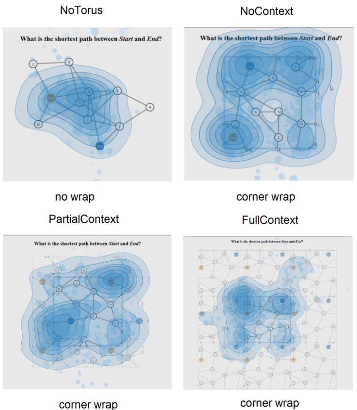

Reading Strategies for Graph Visualizations that Wrap Around in Torus Topology

Venue. ETRA (2023) Full Paper
Authors. Kun-Ting Chen, Quynh Quang Ngo, Kuno Kurzhals, Kim Marriott, Tim Dwyer, Michael Sedlmair, Daniel Weiskopf
Abstract. We investigate reading strategies for node-link diagrams that wrap around the boundaries in a flattened torus topology by examining eye tracking data recorded in a previous controlled study. Prior work showed that torus drawing affords greater flexibility in clutter reduction than traditional node-link representations, but impedes link-and-path exploration tasks, while repeating tiles around boundaries aids comprehension. However, it remains unclear what strategies users apply in different wrapping settings. This is important for design implications for future work on more effective wrapped visualizations for network applications, and cyclic data that could benefit from wrapping. We perform visual-exploratory data analysis of gaze data, and conduct statistical tests derived from the patterns identified. Results show distinguishable gaze behaviors, with more visual glances and transitions between areas of interest in the non-replicated layout. Full-context has more successful visual searches than partial-context, but the gaze allocation indicates that the layout could be more space-efficient.